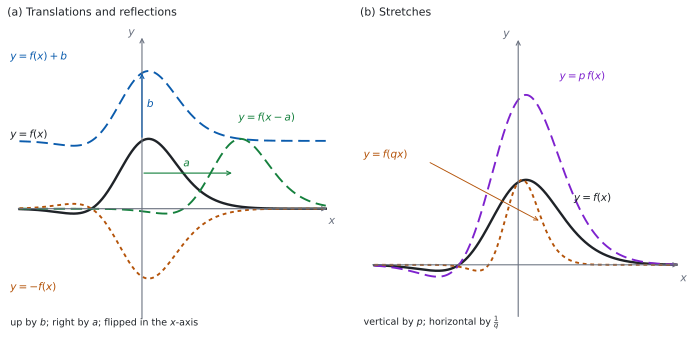

SL 2.11 — Transformations of graphs（グラフの移動と拡大）
- translation（平行移動）\(y = f(x) + b\) と \(y = f(x-a)\) を、向きも含めて説明できる。
- 移動をベクトル \(\begin{pmatrix} a \\ b \end{pmatrix}\) で書ける。
- reflection（対称移動）\(y = -f(x)\) と \(y = f(-x)\) を区別できる。
- stretch（拡大）\(y = p\,f(x)\)（縦に \(p\) 倍）と \(y = f(qx)\)（横に \(\dfrac{1}{q}\) 倍）を区別できる。
- composite transformations（組み合わせ）を、順番に気をつけて扱える。
- 漸近線・切片・頂点がどう動くかを言える。
The idea
1. transformation は、グラフ全体を動かす操作
もとの関数 \(f\) から新しい式を作ると、グラフ全体が動いたり、伸びたり、折り返されたりします。これを transformation（変換）といいます。
大事なのは、式のどこをいじったかです。
- \(f\) の「外」をいじる → \(y\) の側が変わる → 縦向きの変化。見たとおりに動きます。
- \(f\) の「中」（\(x\) の側）をいじる → 横向きの変化。見た目と逆になります。
この \(2\) 行が、このページ全体の土台です。ただし、この \(2\) 行で分かるのは向きだけです。量は、外なら見たまま、中なら符号が逆・倍率が逆数になります。
また、この読み方が使えるのは、中がちょうど \(x-a\) か \(qx\) の形のときだけです。\(y = f(2x-6)\) を「中が \(-6\) だから右へ \(6\)」と読むことはできません（第 5 節）。
2. 平行移動
\[ y = f(x) + b \quad \text{：上へ } b \tag{1}\]
\[ y = f(x - a) \quad \text{：右へ } a \tag{2}\]
図 1 の (a) を見てください。\(b\) が負なら下へ、\(a\) が負なら左へ動きます。
\(2\) つを合わせた \(y = f(x-a) + b\) は、ベクトルで書けます。
\[ \begin{pmatrix} a \\ b \end{pmatrix} \]
これは「右へ \(a\)、上へ \(b\)」という意味です。答案では、この書き方が使えます。
\(f(x-3)\) は右へ \(3\)、\(f(x+3)\) は左へ \(3\) です。
理由は Why it works にあります。「中はさかさま」と覚えるより、\(1\) 点で確かめるのが確実です（その確かめ方も Why it works にあります）。
3. 対称移動
\[ y = -f(x) \quad \text{：} x \text{ 軸で折り返す} \tag{3}\]
\[ y = f(-x) \quad \text{：} y \text{ 軸で折り返す} \tag{4}\]
\(-f(x)\) は \(f\) の外にマイナスが付いています。だから縦の変化、つまり \(x\) 軸についての折り返しです。\(f(-x)\) は中なので横、\(y\) 軸についての折り返しです。
図 1 の (a) の点々の曲線が \(y = -f(x)\) です。
4. 拡大
\[ y = p\,f(x) \quad \text{：縦に } p \text{ 倍} \tag{5}\]
\[ y = f(qx) \quad \text{：横に } \frac{1}{q} \text{ 倍} \tag{6}\]
ここでは \(p > 0\)、\(q > 0\) とします。\(p\) や \(q\) が負のときは、拡大に対称移動が組み合わさった形になり、答案には \(2\) つを分けて書きます。たとえば \(y = -3f(x)\) は「\(x\) 軸についての対称移動」と「scale factor \(3\) の縦の拡大」の \(2\) つです。
縦は素直、横はさかさまです。\(y = f(4x)\) は横に \(\dfrac{1}{4}\) 倍、つまり細くなります。\(y = f\!\left(\dfrac{x}{2}\right)\) なら \(q = \dfrac{1}{2}\) で、横に \(2\) 倍、太くなります。
図 1 の (b) が、その \(2\) つです。
scale factor は「何倍か」です。\(q\) そのものではありません
\(y = f(5x)\) の horizontal stretch の scale factor は \(\dfrac{1}{5}\) です。\(5\) ではありません。
答案には scale factor \(\dfrac{1}{5}\)、あるいは「横に \(\dfrac{1}{5}\) 倍」と書きます。
5. 組み合わせる
\(2\) つ以上を続けてはたらかせることができます。順番で結果が変わることがあります。
たとえば \(y = f(x)\) に「縦に \(3\) 倍」→「上へ \(1\)」の順ではたらかせると
\[ y = 3f(x) + 1 \]
ですが、「上へ \(1\)」→「縦に \(3\) 倍」の順なら
\[ y = 3\big(f(x) + 1\big) = 3f(x) + 3 \]
で、ちがう式になります。
ちがう向き（縦と横）なら、どちらが先でも同じ結果です。縦は \(y\) 座標だけ、横は \(x\) 座標だけを変えるからです。
同じ向きどうしでは、順番が効くことがあります。 効くのは、平行移動（足す）と、拡大・対称移動（かける）が、同じ向きで混ざるときです。上の例がまさにそれで、縦の拡大と縦の平行移動でした。
いっぽう、同じ向きでもかける操作どうしなら、順番は結果を変えません。「縦に \(3\) 倍」と「\(x\) 軸で折り返す」は、どちらが先でも \(y = -3f(x)\) です。平行移動どうしも同じです。
まとめると、「足す」と「かける」が同じ向きでぶつかるときだけ、順番を気にすれば十分です。この項目（2.11）では横どうしが混ざる形（下の callout）を扱わないので、ここで順番が問題になるのは縦どうしの組み合わせだけです。
シラバスの 2.11 には Not required: として、\(f(ax+b)\) の形の変換が挙がっています。ここで問われないのは、グラフだけが与えられた一般の \(f\) について、横の拡大と横の平行移動が同時に入った形を「述べる」ことです。
これは 2.11 の範囲の話で、SL 全体で出ないという意味ではありません。 SL 3.7b の \(y = a\sin\bigl(b(x+c)\bigr) + d\) は、まさに横の拡大と横の平行移動が同時に入った形で、シラバス 3.7 に書かれています。
ちがいは、かっこが \(b(x+c)\) の形にくくってあることです。 くくってあれば、横の拡大は \(b\)、横の平行移動は \(c\) と、別々に読めます。くくっていない \(f(ax+b)\) を一般の \(f\) について扱うことが、2.11 では求められない、ということです。
6. 特徴のある点や線は、どう動くか
変換は、平面のすべての点に同じことをします。 グラフ上の点だけでなく、平面にひいた線も同じ規則で移ります。だから切片や頂点だけでなく、グラフが触れていない漸近線も、同じ規則で動きます。
| もとの特徴 | \(y = f(x)+b\) | \(y = f(x-a)\) | \(y = -f(x)\) | \(y = f(-x)\) | \(y = p\,f(x)\) | \(y = f(qx)\) |
|---|---|---|---|---|---|---|
| 点 \((s, t)\) | \((s, \ t+b)\) | \((s+a, \ t)\) | \((s, \ -t)\) | \((-s, \ t)\) | \((s, \ pt)\) | \(\left(\dfrac{s}{q}, \ t\right)\) |
| 水平漸近線 \(y = k\) | \(y = k+b\) | \(y = k\) | \(y = -k\) | \(y = k\) | \(y = pk\) | \(y = k\) |
| 垂直漸近線 \(x = h\) | \(x = h\) | \(x = h+a\) | \(x = h\) | \(x = -h\) | \(x = h\) | \(x = \dfrac{h}{q}\) |
表を覚える必要はありません。 \(1\) つの点でやってみれば、その場で出せます（Why it works）。
7. 答案の書き方
Describe the transformation と言われたら、次の \(3\) つを書きます。
- 名前（translation / reflection / stretch）
- 量（何単位か、scale factor はいくつか）
- 向き（上下左右、どの軸について、縦か横か）
たとえば「translation of \(3\) units to the right」「reflection in the \(x\)-axis」「vertical stretch with scale factor \(2\)」です。\(3\) つのうち \(1\) つでも抜けると、伝わりません。
TI-Nspire の Graphs 画面に \(f_1(x)\) を入れ、\(f_2(x) = f_1(x-3)\) のように前の式を参照して入れると、\(2\) 本が同時に出ます。どちらへ動いたかが、その場で見えます。
menu → Actions → Insert Slider でスライダーを置き、変数名を \(a\) に変えてから \(f_2(x) = f_1(x-a)\) と入れると、\(a\) を動かしながらグラフの動きを見られます。メニューの名前は OS のバージョンでちがうことがあるので、自分の機械でたしかめてください。
Paper 1 では使えません。 このページの例題と演習は、すべて手で解ける形にしてあります。

Why it works
なぜ、\(f(x-a)\) が「右へ」なのでしょうか。
\(y = f(x-a)\) のグラフが点 \((X, Y)\) を通るとは、\(Y = f(X-a)\) ということです。ここで \(s = X - a\) とおくと \(Y = f(s)\) なので、点 \((s, Y)\) は、もとのグラフの上にあります。
\(X = s + a\) ですから、もとの点 \((s, Y)\) が、新しいグラフでは \((s+a, Y)\) に移っているわけです。\(a\) だけ右です。
「中の \(-a\)」が「右へ \(+a\)」になるのは、\(x\) を解き直しているからです。\(f\) に食べさせる値を同じに保つには、\(x\) のほうを \(a\) だけ大きくしなければなりません。
なぜ、\(f(qx)\) が「横に \(\dfrac{1}{q}\) 倍」なのでしょうか。 同じ考え方です。\(Y = f(qX)\) で \(s = qX\) とおくと、もとの点は \((s, Y)\)、新しい点は \(\left(\dfrac{s}{q}, Y\right)\) です。\(x\) 座標が \(\dfrac{1}{q}\) 倍になっています。
なぜ、縦向きは素直なのでしょうか。 \(y = f(x) + b\) では、\(x\) をそのまま \(f\) に食べさせて、出てきた値に \(b\) を足すだけです。\(x\) 座標はさわっていないので、点 \((s, t)\) は \((s, t+b)\) に移ります。式の見たとおりです。
なぜ、順番で変わることがあるのでしょうか。 縦向きの変換は、\(f(x)\) の値にかけるか足すかの操作です。「\(3\) 倍してから \(1\) を足す」と「\(1\) を足してから \(3\) 倍する」がちがうのは、あとからかけると、先に足した \(1\) まで一緒に \(3\) 倍されてしまうからです。
いっぽう、縦の操作は \(y\) 座標だけ、横の操作は \(x\) 座標だけを変えます。別々の座標をさわっているので、ぶつかりません。 だから縦と横は、どちらが先でも同じ結果になります。
Worked examples
問題文は英語です。意味が理解できなかったら、問題文の下の「日本語訳」を開いてください。解説は日本語です。
例題も演習も、すべて電卓なしで解けます。 Paper 1 のつもりで解いてください。
例題 1 Let \(f(x) = x^{2}\).
(a) Describe the transformation that maps the graph of \(y = f(x)\) to the graph of \(y = f(x) + 3\).
(b) Describe the transformation that maps the graph of \(y = f(x)\) to the graph of \(y = f(x - 4)\).
(c) Write down the coordinates of the vertex of \(y = f(x-4) + 3\).
(d) Explain why the graph of \(y = f(x-4)\) is a translation of the graph of \(y = f(x)\) to the right and not to the left.
日本語訳
\(f(x) = x^{2}\) とします。
(a) \(y = f(x)\) のグラフを \(y = f(x) + 3\) のグラフに移す変換を述べなさい。
(b) \(y = f(x)\) のグラフを \(y = f(x-4)\) のグラフに移す変換を述べなさい。
(c) \(y = f(x-4)+3\) の頂点の座標を書きなさい。
(d) \(y = f(x-4)\) のグラフが、\(y = f(x)\) のグラフの、左でなく右への平行移動である理由を説明しなさい。
(a) \(f\) の外に \(+3\) です。縦の変化で、見たとおりに上へ動きます（第 2 節）。
\[ \text{translation of } 3 \text{ units up}, \qquad \begin{pmatrix} 0 \\ 3 \end{pmatrix} \]
(b) \(f\) の中が \(x - 4\) です。横の変化で、右へ \(4\) です。
\[ \text{translation of } 4 \text{ units to the right}, \qquad \begin{pmatrix} 4 \\ 0 \end{pmatrix} \]
(c) \(y = x^{2}\) の頂点は \((0, 0)\) です。右へ \(4\)、上へ \(3\) 動かします（表 1）。
\[ (4, \ 3) \]
(d) Explain why なので、英語で理由を書きます。
試験ではこう書く
A point \((x, y)\) lies on \(y = f(x-4)\) when the value fed into \(f\) is \(x-4\). To feed \(f\) the same input as before, \(x\) must now be \(4\) larger, so every point appears \(4\) units further right. Checking with the vertex: \(y = (x-4)^{2}\) has its minimum where \(x-4 = 0\), that is at \(x = 4\), which is to the right of \(x = 0\).
（点 \((x, y)\) が \(y = f(x-4)\) の上にあるとき、\(f\) に入れている値は \(x-4\) である。前と同じ値を \(f\) に入れるには、\(x\) のほうが \(4\) だけ大きくなければならない。よってどの点も \(4\) だけ右に現れる。頂点で確かめると、\(y = (x-4)^{2}\) が最小になるのは \(x-4 = 0\) のとき、つまり \(x = 4\) で、\(x = 0\) より右である、という意味です。）
検算（(a) について）。 \(1\) 点でためします。 もとのグラフは \((2, 4)\) を通ります。\(y = f(2)+3 = 7\) なので、新しいグラフは \((2, 7)\) を通ります ✓ \(x\) は変わらず、\(y\) が \(3\) 増えました。
検算（(b) について）。 同じ \(y\) の値がどこに来るかを見ます。 もとのグラフで \(y = 4\) になるのは \(x = \pm 2\) です。\(y = f(x-4) = (x-4)^{2} = 4\) を解くと \(x - 4 = \pm 2\)、つまり \(x = 6\) と \(x = 2\) です ✓ どちらも、もとの \(x\) より \(4\) 大きくなっています。
検算（(c) について）。 式を書き下して、vertex form として読みます。 \(y = (x-4)^{2}+3\) は vertex form そのもので、頂点は \((4, 3)\) です（SL 2.6）✓ 移動から出した答えと一致しました。
(a) Translation of \(3\) units up \[\begin{pmatrix} 0 \\ 3 \end{pmatrix}\]
(b) Translation of \(4\) units to the right \[\begin{pmatrix} 4 \\ 0 \end{pmatrix}\]
(c) \[(4, \ 3)\]
(d) The input to \(f\) is \(x-4\), so \(x\) must be \(4\) larger to give the same output; every point moves \(4\) to the right.
例題 2 Let \(f(x) = x^{2} - 4x\).
(a) Find the zeros of \(f\).
(b) Write down the zeros of \(y = -f(x)\).
(c) Find the zeros of \(y = f(-x)\).
(d) Explain why a reflection in the \(x\)-axis leaves the zeros unchanged.
日本語訳
\(f(x) = x^{2} - 4x\) とします。
(a) \(f\) の zeros を求めなさい。
(b) \(y = -f(x)\) の zeros を書きなさい。
(c) \(y = f(-x)\) の zeros を求めなさい。
(d) \(x\) 軸についての対称移動で zeros が変わらない理由を説明しなさい。
(a) 共通因数でくくります（SL 2.7a）。
\[ x(x-4) = 0 \ \Rightarrow \ x = 0 \ \text{または} \ x = 4 \]
(b) \(x\) 軸で折り返しても、\(x\) 軸上の点はその場に残ります（(d)）。
\[ x = 0 \quad \text{または} \quad x = 4 \]
(c) \(y\) 軸で折り返すので、\(x\) 座標の符号が変わります（表 1）。式でも確かめます。
\[ f(-x) = (-x)^{2} - 4(-x) = x^{2} + 4x = x(x+4) \]
\[ x = 0 \quad \text{または} \quad x = -4 \]
(d) Explain why なので、英語で理由を書きます。
試験ではこう書く
A zero is a value of \(x\) with \(f(x) = 0\). Under \(y = -f(x)\) the new value at that \(x\) is \(-0 = 0\), so the same \(x\) is still a zero. Geometrically, the zeros are the points where the graph meets the \(x\)-axis, and reflecting in the \(x\)-axis keeps every point of that axis fixed, so those crossing points do not move.
（zero とは \(f(x) = 0\) となる \(x\) の値である。\(y = -f(x)\) ではその \(x\) での値が \(-0 = 0\) になるので、同じ \(x\) がやはり zero である。図で見れば、zeros はグラフが \(x\) 軸と出会う点であり、\(x\) 軸についての折り返しは \(x\) 軸上のどの点も動かさないので、その交点は動かない、という意味です。）
検算（(a) について）。 もとの式に入れ直します。 \(f(0) = 0\) ✓ \(f(4) = 16 - 16 = 0\) ✓
検算（(b) について）。 式を書いて確かめます。 \(-f(x) = -x^{2}+4x = -x(x-4)\) で、\(0\) になるのは \(x = 0\) と \(x = 4\) ✓ (a) と同じです。
検算（(c) について）。 展開した式を使わず、もとの \(f\) に入れ直します。 \(y = f(-x)\) に \(x = -4\) を入れると \(f\big(-(-4)\big) = f(4) = 16-16 = 0\) ✓ \(x = 0\) でも \(f(0) = 0\) ✓ 別の道すじで、同じ \(2\) 数が出ました。
(a) \(x(x-4) = 0\) \[x = 0 \quad \text{or} \quad x = 4\]
(b) \[x = 0 \quad \text{or} \quad x = 4\]
(c) \(f(-x) = x^{2}+4x = x(x+4)\) \[x = 0 \quad \text{or} \quad x = -4\]
(d) A zero has \(f(x) = 0\), and \(-0 = 0\), so the same \(x\) values work; points on the \(x\)-axis are fixed by a reflection in that axis.
例題 3 Let \(f(x) = x^{2} - 9\).
(a) Write down the coordinates of the points where the graph of \(y = f(x)\) meets the \(x\)-axis.
(b) Find the coordinates of the points where the graph of \(y = f(2x)\) meets the \(x\)-axis.
(c) Find the coordinates of the point where the graph of \(y = 3f(x)\) meets the \(y\)-axis.
(d) A student states that \(y = f(2x)\) is a horizontal stretch with scale factor \(2\). Comment on this statement.
日本語訳
\(f(x) = x^{2} - 9\) とします。
(a) \(y = f(x)\) のグラフが \(x\) 軸と出会う点の座標を書きなさい。
(b) \(y = f(2x)\) のグラフが \(x\) 軸と出会う点の座標を求めなさい。
(c) \(y = 3f(x)\) のグラフが \(y\) 軸と出会う点の座標を求めなさい。
(d) ある生徒が「\(y = f(2x)\) は scale factor \(2\) の横方向の拡大である」と述べました。この発言について述べなさい。
(a) \(x^{2} - 9 = (x-3)(x+3)\) です。
\[ (3, \ 0) \quad \text{and} \quad (-3, \ 0) \]
(b) \(f(2x) = (2x)^{2} - 9 = 4x^{2} - 9\) です。
\[ 4x^{2} - 9 = 0 \ \Rightarrow \ x^{2} = \frac{9}{4} \ \Rightarrow \ x = \pm\frac{3}{2} \]
\[ \left(\frac{3}{2}, \ 0\right) \quad \text{and} \quad \left(-\frac{3}{2}, \ 0\right) \]
(c) \(y\) 軸では \(x = 0\) です。\(3f(0) = 3(-9) = -27\)。
\[ (0, \ -27) \]
(d) Comment on なので、英語で判断とその理由を書きます。
試験ではこう書く
The statement is not correct. In \(y = f(qx)\) the horizontal scale factor is \(\dfrac{1}{q}\), so here it is \(\dfrac{1}{2}\), and the graph is squeezed rather than widened. The intercepts show this: they move from \(x = \pm 3\) to \(x = \pm\dfrac{3}{2}\), which is half as far from the \(y\)-axis. A scale factor of \(2\) would put them at \(x = \pm 6\).
（この発言は正しくない。\(y = f(qx)\) では横方向の scale factor は \(\dfrac{1}{q}\) なので、ここでは \(\dfrac{1}{2}\) であり、グラフは広がるのではなく縮む。切片がそれを示している。\(x = \pm 3\) から \(x = \pm\dfrac{3}{2}\) へ移り、\(y\) 軸からの距離が半分になっている。scale factor が \(2\) なら \(x = \pm 6\) に来るはずである、という意味です。）
検算（(a) について）。 もとの式に入れ直します。 \(f(3) = 9 - 9 = 0\) ✓ \(f(-3) = 0\) ✓
検算（(b) について）。 もとの点との対応で見ます。 表 1 によると、点 \((s, t)\) は \(\left(\dfrac{s}{q}, t\right)\) に移ります。\(q = 2\) なので \((3, 0) \to \left(\dfrac{3}{2}, 0\right)\) ✓ 式を解いて出した答えと一致しました。
検算（(c) について）。 変換後の式を書き下して読みます。 \(y = 3f(x) = 3\big(x^{2}-9\big) = 3x^{2}-27\) です。定数項が \(y\) 切片なので \((0, -27)\) ✓ ついでに \(x\) 切片も見ると、\(3x^{2} = 27\) から \(x = \pm 3\) で、(a) と変わっていません。縦の拡大では \(x\) 切片が動かないことも確かめられました。
(a) \[(3, \ 0) \quad \text{and} \quad (-3, \ 0)\]
(b) \(4x^{2} - 9 = 0\) \[\left(\frac{3}{2}, \ 0\right) \quad \text{and} \quad \left(-\frac{3}{2}, \ 0\right)\]
(c) \[(0, \ -27)\]
(d) Not correct: for \(y = f(qx)\) the scale factor is \(\dfrac{1}{q} = \dfrac{1}{2}\), and the intercepts move from \(\pm 3\) to \(\pm\dfrac{3}{2}\).
例題 4 The graph of \(y = f(x)\) is transformed by a vertical stretch with scale factor \(2\), followed by a translation by the vector \(\begin{pmatrix} 0 \\ -5 \end{pmatrix}\).
(a) Write down the equation of the resulting graph in terms of \(f\).
(b) The point \((3, 4)\) lies on the graph of \(y = f(x)\). Find the coordinates of its image.
(c) The same two transformations are applied in the opposite order. Write down the equation of the resulting graph.
(d) Explain why the order of these two transformations matters.
日本語訳
\(y = f(x)\) のグラフに、scale factor \(2\) の縦方向の拡大、続いてベクトル \(\begin{pmatrix} 0 \\ -5 \end{pmatrix}\) の平行移動をほどこします。
(a) できあがるグラフの式を、\(f\) を使って書きなさい。
(b) 点 \((3, 4)\) が \(y = f(x)\) のグラフ上にあります。その像の座標を求めなさい。
(c) 同じ \(2\) つの変換を、逆の順にほどこします。できあがるグラフの式を書きなさい。
(d) この \(2\) つの変換で順番が問題になる理由を説明しなさい。
(a) まず縦に \(2\) 倍して \(2f(x)\)、それから下へ \(5\) です（第 5 節）。
\[ y = 2f(x) - 5 \]
(b) \(x\) 座標は変わりません。\(y\) 座標は \(2(4) - 5\) です。
\[ (3, \ 3) \]
(c) 先に下へ \(5\) で \(f(x) - 5\)、それを縦に \(2\) 倍します。
\[ y = 2\big(f(x) - 5\big) = 2f(x) - 10 \]
(d) Explain why なので、英語で理由を書きます。
試験ではこう書く
Both transformations change only the \(y\)-coordinate: one multiplies it by \(2\), the other subtracts \(5\). Multiplying and then subtracting is not the same as subtracting and then multiplying, because the stretch also multiplies the \(5\) when it is applied second. The point \((3,4)\) shows this: one order gives \(2(4)-5 = 3\), the other gives \(2(4-5) = -2\).
（どちらの変換も \(y\) 座標だけを変える。一方は \(2\) 倍し、もう一方は \(5\) を引く。かけてから引くのと、引いてからかけるのは同じではない。拡大をあとにすると、その \(5\) まで \(2\) 倍されてしまうからである。点 \((3,4)\) がそれを示す。一方の順では \(2(4)-5 = 3\)、もう一方では \(2(4-5) = -2\) となる、という意味です。）
検算（(a) について）。 点で追います。 \((3, 4)\) を縦に \(2\) 倍すると \((3, 8)\)、下へ \(5\) で \((3, 3)\) です。式 \(y = 2f(3) - 5 = 8 - 5 = 3\) ✓ 同じ点になりました。
検算（(b) について）。 像から、逆にたどって戻します。 像 \((3, 3)\) に、平行移動の逆（上へ \(5\)）をほどこすと \((3, 8)\)、拡大の逆（縦に \(\dfrac{1}{2}\) 倍）で \((3, 4)\) です ✓ もとの点にちょうど戻りました。
検算（(c) について）。 同じ点で、逆の順に追います。 \((3, 4)\) を下へ \(5\) で \((3, -1)\)、縦に \(2\) 倍で \((3, -2)\) です。式 \(y = 2f(3) - 10 = 8 - 10 = -2\) ✓ (a) の \(3\) とはちがう値です。
(a) \[y = 2f(x) - 5\]
(b) \[(3, \ 3)\]
(c) \[y = 2\big(f(x) - 5\big) = 2f(x) - 10\]
(d) Both change only \(y\): multiplying by \(2\) then subtracting \(5\) is not the same as subtracting \(5\) then multiplying, since the second order also doubles the \(5\).
Common errors
\(f(x-3)\) は右へ \(3\) です（第 2 節）。\(1\) 点でためすのがいちばん確実です。
\(-f(x)\) は外なので縦、\(x\) 軸で折り返します。\(f(-x)\) は中なので横、\(y\) 軸で折り返します（第 3 節）。
横の scale factor は \(\dfrac{1}{q}\) です（第 4 節）。\(f(2x)\) なら \(\dfrac{1}{2}\) です。
describe なのに、名前・量・向きのどれかを落とす
\(3\) つそろって \(1\) つの答えです（第 7 節）。「\(3\) 動かす」だけでは、どちらへか分かりません。
縦の拡大（または対称移動）と縦の平行移動は、順番で結果が変わります（第 5 節）。問題文の順にほどこしてください。
\(y = f(x) + b\) なら、水平漸近線も \(b\) だけ上がります（表 1）。グラフの点だけでなく、漸近線も一緒に動きます。
Exercises
各問題に、折りたたみが \(3\) つ付いています。日本語訳、解答例（答案用紙に書くべきこと。英語です）、解説（なぜそうなるか。日本語です）。
まず自分で解いて、次に解答例と見くらべてください。解説は、合わなかったときだけ開けば十分です。
1 Describe the transformation that maps the graph of \(y = f(x)\) to the graph of \(y = f(x) - 6\).
日本語訳
\(y = f(x)\) のグラフを \(y = f(x) - 6\) のグラフに移す変換を述べなさい。
Translation of \(6\) units down
\[\begin{pmatrix} 0 \\ -6 \end{pmatrix}\]
2 Describe the transformation that maps the graph of \(y = f(x)\) to the graph of \(y = f(x + 2)\).
日本語訳
\(y = f(x)\) のグラフを \(y = f(x+2)\) のグラフに移す変換を述べなさい。
Translation of \(2\) units to the left
\[\begin{pmatrix} -2 \\ 0 \end{pmatrix}\]
\(f\) の中なので横の変化で、見た目と逆です（第 2 節）。\(f(x-a)\) の形に直すと \(a = -2\) なので、左へ \(2\) です。
検算。 \(1\) 点でためします。 もとのグラフが \((5, 1)\) を通るなら、\(f(x+2) = 1\) になるのは \(x + 2 = 5\)、つまり \(x = 3\) です ✓ もとより \(2\) 小さいので、左へ動いています。
「右へ \(2\)」としないでください。 中の符号は、そのままの向きにはなりません。
3 The graph of \(y = x^{2}\) is translated by \(\begin{pmatrix} 3 \\ -1 \end{pmatrix}\). Write down the equation of the new graph.
日本語訳
\(y = x^{2}\) のグラフを、ベクトル \(\begin{pmatrix} 3 \\ -1 \end{pmatrix}\) だけ平行移動します。新しいグラフの式を書きなさい。
\[y = (x-3)^{2} - 1\]
4 Describe the transformation that maps the graph of \(y = f(x)\) to the graph of \(y = -f(x)\).
日本語訳
\(y = f(x)\) のグラフを \(y = -f(x)\) のグラフに移す変換を述べなさい。
Reflection in the \(x\)-axis
マイナスが \(f\) の外にあるので、縦の変化です（第 3 節）。
検算。 \(1\) 点でためします。 もとのグラフが \((2, 5)\) を通るなら、新しいグラフでは \(y = -5\) で \((2, -5)\) です ✓ \(x\) 軸をはさんで反対側に来ました。
in the x-axis と書いてください。 about や over より、この言い方が使われます。
5 The point \((2, 7)\) lies on the graph of \(y = f(x)\). Write down the coordinates of the image of this point on the graph of \(y = f(-x)\).
日本語訳
点 \((2, 7)\) が \(y = f(x)\) のグラフ上にあります。\(y = f(-x)\) のグラフ上の、この点の像の座標を書きなさい。
\[(-2, \ 7)\]
\(y\) 軸で折り返すので、\(x\) 座標の符号だけが変わります（表 1）。
検算。 式で追います。 \(x = -2\) を入れると \(f(-(-2)) = f(2) = 7\) ✓ たしかに \((-2, 7)\) を通ります。
\(y\) 座標は変わりません。 横の変換なので、高さはそのままです。
6 The graph of \(y = f(x)\) passes through the point \((1, 4)\).
(a) The graph is stretched vertically with scale factor \(3\), and the result is then translated \(2\) units up. Write down the equation of the final graph and the coordinates of the image of \((1, 4)\).
(b) The graph of \(y = f(x)\) is translated \(2\) units up, and the result is then stretched vertically with scale factor \(3\). Write down the equation of the final graph and the coordinates of the image of \((1, 4)\).
(c) Comment on what your two answers show about the order of these transformations.
日本語訳
\(y = f(x)\) のグラフは点 \((1, 4)\) を通ります。
(a) このグラフを縦に scale factor \(3\) で拡大し、そのあと上へ \(2\) 平行移動します。できたグラフの式と、\((1,4)\) が移る先の座標を書きなさい。
(b) \(y = f(x)\) のグラフを上へ \(2\) 平行移動し、そのあと縦に scale factor \(3\) で拡大します。できたグラフの式と、\((1,4)\) が移る先の座標を書きなさい。
(c) \(2\) つの答えから、これらの変換の順番について何が分かるかを述べなさい。
(a)
\[y = 3f(x) + 2, \qquad (1, \ 14)\]
(b)
\[y = 3\bigl(f(x) + 2\bigr) = 3f(x) + 6, \qquad (1, \ 18)\]
(c) the two graphs are different, so the order of these two transformations matters
(a) 縦に \(3\) 倍して \(3f(x)\)、そのあと上へ \(2\) で \(3f(x)+2\) です。点の \(y\) 座標は \(4 \to 12 \to 14\) と動きます。
(b) 上へ \(2\) で \(f(x)+2\)、そのあと縦に \(3\) 倍して \(3\bigl(f(x)+2\bigr) = 3f(x)+6\) です。\(y\) 座標は \(4 \to 6 \to 18\) と動きます。あとからかける拡大は、足した \(2\) も \(3\) 倍にします。
どちらも縦の変換なので、順番が効きます（第 5 節）。「足す」と「かける」が同じ向きでぶつかっているからです。
検算（\(1\) 点で）。 (a) は \(3 \times 4 + 2 = 14\)、(b) は \(3 \times (4+2) = 18\) ✓ ちがう値になりました。
検算（\(y\) 切片で）。 \(f(0) = 0\) とすると、(a) の \(y\) 切片は \(2\)、(b) は \(6\) です ✓ ここでもちがいます。
試験ではこう書く
Stretching first and then translating gives \(y = 3f(x)+2\), and the point \((1, 4)\) maps to \((1, 14)\). Translating first and then stretching gives \(y = 3f(x)+6\), and the same point maps to \((1, 18)\). The equations and the images are different, so these two transformations cannot be applied in either order: when a vertical stretch and a vertical translation are combined, the order changes the result.
7 Describe the transformation that maps the graph of \(y = f(x)\) to the graph of \(y = f(3x)\).
日本語訳
\(y = f(x)\) のグラフを \(y = f(3x)\) のグラフに移す変換を述べなさい。
Horizontal stretch with scale factor \(\dfrac{1}{3}\)
\(f\) の中なので横の変化で、scale factor は \(\dfrac{1}{q} = \dfrac{1}{3}\) です（第 4 節）。グラフは細くなります。
検算。 \(1\) 点でためします。 もとのグラフが \((6, 5)\) を通るなら、\(f(3x) = 5\) になるのは \(3x = 6\)、つまり \(x = 2\) です ✓ \(y\) 軸からの距離が \(\dfrac{1}{3}\) になりました。
scale factor を \(3\) としないでください。 横だけは、\(q\) の逆数です。
8 The graph of \(y = f(x)\) has a horizontal asymptote \(y = 2\). Write down the equation of the horizontal asymptote of the graph of \(y = f(x) + 5\).
日本語訳
\(y = f(x)\) のグラフは水平漸近線 \(y = 2\) をもちます。\(y = f(x) + 5\) のグラフの水平漸近線の式を書きなさい。
\[y = 7\]
9 Explain why a reflection in the \(y\)-axis does not change the \(y\)-intercept of a graph.
日本語訳
\(y\) 軸についての対称移動で、グラフの \(y\) 切片が変わらない理由を説明しなさい。
The \(y\)-intercept is the point where \(x = 0\), and \(f(-0) = f(0)\), so the value there is unchanged.
Explain why なので、\(y\) 切片が何かを言ってから、\(x = 0\) で何が起こるかを書きます。
検算。 \(y\) 切片が \(0\) でない例で見ます。 \(f(x) = x^{2}-4x+3\) なら \(f(0) = 3\) で、\(y\) 切片は \((0, 3)\) です。\(f(-x) = x^{2}+4x+3\) で、こちらも \(x = 0\) のとき \(3\) です ✓ \(x\) 切片は \(1, 3\) から \(-1, -3\) へ動いたのに、\(y\) 切片だけは動きませんでした。
試験ではこう書く
The \(y\)-intercept is the point of the graph with \(x = 0\). On \(y = f(-x)\) the value at \(x = 0\) is \(f(-0) = f(0)\), which is the same as before, so the intercept is unchanged. Geometrically, the point \((0, f(0))\) lies on the \(y\)-axis, and a reflection in the \(y\)-axis leaves every point of that axis where it is.
10 A student states that the graph of \(y = \dfrac{1}{2}f(x)\) is obtained from the graph of \(y = f(x)\) by a vertical stretch with scale factor \(2\). Identify the error, and write down the correct scale factor.
日本語訳
ある生徒が、\(y = \dfrac{1}{2}f(x)\) のグラフは \(y = f(x)\) のグラフを scale factor \(2\) の縦方向の拡大で得られる、と述べました。誤りを指摘し、正しい scale factor を書きなさい。
The vertical scale factor is the number multiplying \(f(x)\), and here that number is \(\dfrac{1}{2}\).
\[\text{scale factor } \frac{1}{2}\]
Identify the error なので、どこが違うのかを名指ししてから、正しい答えを書きます。
縦の拡大は素直です（第 4 節）。逆数をとるのは、横のときだけです。この生徒は、横の規則を縦に当てはめています。
検算。 \(1\) 点でためします。 もとのグラフが \((1, 6)\) を通るなら、新しいグラフは \(\left(1, 3\right)\) を通ります ✓ 高さが半分になっており、\(2\) 倍ではありません。
試験ではこう書く
For \(y = p f(x)\) the vertical scale factor is \(p\) itself, not its reciprocal; reciprocals appear only for horizontal stretches \(y = f(qx)\). Here \(p = \dfrac{1}{2}\), so the graph is squashed to half its height, not doubled. For example a point \((1, 6)\) on \(y = f(x)\) maps to \((1, 3)\). The scale factor is \(\dfrac{1}{2}\).